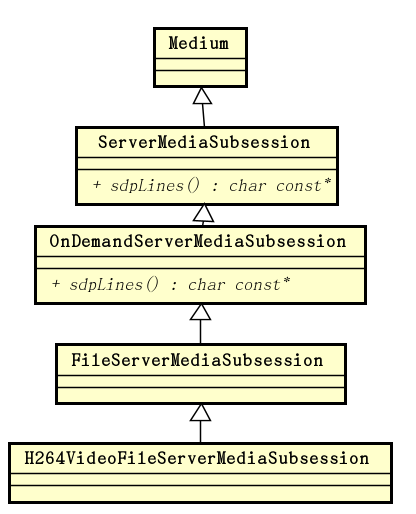

1. Live555 Source code analysis: DESCRIBE processing
Posted on 2017-09-04 | In live555
In the live555 source code analysis:
RTSPServer analyzes the general process
of processing RTSP requests in live555, and analyzes some methods that are not
so complicated to deal with, such as OPTIONS, GET_PARAMETER and
so SET_PARAMETER on. Limited space, there is no analysis of the most
important DESCRIBE, SETUP and PLAY deal with these methods.
This article continues the analysis live555 of RTSP requests,
analysis DESCRIBE, SETUP and PLAY of these the most important methods of
treatment.
in
RTSPServer::RTSPClientConnection::handleRequestBytes(int newBytesRead) By
calling handleCmd_DESCRIBE() function processing DESCRIBE request, as follows:
} else if (strcmp(cmdName, "DESCRIBE") == 0) {
handleCmd_DESCRIBE(urlPreSuffix, urlSuffix,
(char const*) fRequestBuffer);
}
handleCmd_DESCRIBE() The definition of a function is like this:
void RTSPServer::RTSPClientConnection
::handleCmd_DESCRIBE(char const* urlPreSuffix, char const* urlSuffix, char const* fullRequestStr) {
ServerMediaSession* session = NULL;
char* sdpDescription = NULL;
char* rtspURL = NULL;
do {
char urlTotalSuffix[2*RTSP_PARAM_STRING_MAX];
// enough space for urlPreSuffix/urlSuffix'\0'
urlTotalSuffix[0] = '\0';
if (urlPreSuffix[0] != '\0') {
strcat(urlTotalSuffix, urlPreSuffix);
strcat(urlTotalSuffix, "/");
}
strcat(urlTotalSuffix, urlSuffix);
if (!authenticationOK("DESCRIBE", urlTotalSuffix, fullRequestStr)) break;
// We should really check that the request contains an "Accept:" #####
// for "application/sdp", because that's what we're sending back #####
// Begin by looking up the "ServerMediaSession" object for the specified "urlTotalSuffix":
session = fOurServer.lookupServerMediaSession(urlTotalSuffix);
if (session == NULL) {
handleCmd_notFound();
break;
}
// Increment the "ServerMediaSession" object's reference count, in case someone removes it
// while we're using it:
session->incrementReferenceCount();
// Then, assemble a SDP description for this session:
sdpDescription = session->generateSDPDescription();
if (sdpDescription == NULL) {
// This usually means that a file name that was specified for a
// "ServerMediaSubsession" does not exist.
setRTSPResponse("404 File Not Found, Or In Incorrect Format");
break;
}
unsigned sdpDescriptionSize = strlen(sdpDescription);
// Also, generate our RTSP URL, for the "Content-Base:" header
// (which is necessary to ensure that the correct URL gets used in subsequent "SETUP" requests).
rtspURL = fOurRTSPServer.rtspURL(session, fClientInputSocket);
snprintf((char*) fResponseBuffer, sizeof fResponseBuffer,
"RTSP/1.0 200 OK\r\nCSeq: %s\r\n"
"%s"
"Content-Base: %s/\r\n"
"Content-Type: application/sdp\r\n"
"Content-Length: %d\r\n\r\n"
"%s",
fCurrentCSeq,
dateHeader(),
rtspURL,
sdpDescriptionSize,
sdpDescription);
} while (0);
if (session != NULL) {
// Decrement its reference count, now that we're done using it:
session->decrementReferenceCount();
if (session->referenceCount() == 0 && session->deleteWhenUnreferenced()) {
fOurServer.removeServerMediaSession(session);
}
}
delete[] sdpDescription;
delete[] rtspURL;
}
handleCmd_DESCRIBE() Function by a do-while (0) of the structure to
achieve DESCRIBE the processing method. The advantage of the do-while(0)
structure is probably that, in the event of an error, there is no need to return
directly, messing up the control flow, and jumping to the end of the function
without the goto statement.
This function is in DESCRIBE operation the whole execution process:
First of execution on the URL DESCRIBE certification authority operations,
"LIVE555 Media Server" does not provide authentication, authentication will
always be successful.
Find or create a ServerMediaSession structure for operating the meta
information of the media stream. The search is based on the path of the
resource in the URL. For "LIVE555 Media Server", it is also the relative
path of the corresponding file relative to the directory running on the
server. When the function fails to execute, it will directly return 404 to
the client:
void RTSPServer::RTSPClientConnection::handleCmd_notFound() {
setRTSPResponse("404 Stream Not Found");
}
Generate an SDP description. On failure, it also returns a 404 failure to
the client.
Get the RTSP URL. The RTSP URL is spliced by the server's IP address and URL
path:
char* RTSPServer
::rtspURL(ServerMediaSession const* serverMediaSession, int clientSocket) const {
char* urlPrefix = rtspURLPrefix(clientSocket);
char const* sessionName = serverMediaSession->streamName();
char* resultURL = new char[strlen(urlPrefix) + strlen(sessionName) + 1];
sprintf(resultURL, "%s%s", urlPrefix, sessionName);
delete[] urlPrefix;
return resultURL;
}
char* RTSPServer::rtspURLPrefix(int clientSocket) const {
struct sockaddr_in ourAddress;
if (clientSocket < 0) {
// Use our default IP address in the URL:
ourAddress.sin_addr.s_addr = ReceivingInterfaceAddr != 0
? ReceivingInterfaceAddr
: ourIPAddress(envir()); // hack
} else {
SOCKLEN_T namelen = sizeof ourAddress;
getsockname(clientSocket, (struct sockaddr*)&ourAddress, &namelen);
}
char urlBuffer[100]; // more than big enough for "rtsp://<ip-address>:<port>/"
portNumBits portNumHostOrder = ntohs(fServerPort.num());
if (portNumHostOrder == 554 /* the default port number */) {
sprintf(urlBuffer, "rtsp://%s/", AddressString(ourAddress).val());
} else {
sprintf(urlBuffer, "rtsp://%s:%hu/",
AddressString(ourAddress).val(), portNumHostOrder);
}
return strDup(urlBuffer);
}
- Generate a response message.
In the DESCRIBE request, the client can through Accept the server shows that what
the media streaming session supports the following way, but in live555, it seems
is to identify the client requests only SDP, and therefore the whole process all
manner of produce SDP media stream get on. The SDP message is placed in the body
of the response message.
handleCmd_DESCRIBE() By function lookupServerMediaSession() to find or create
a ServerMediaSession structure, the function GenericMediaServer declaration class:
virtual ServerMediaSession*
lookupServerMediaSession(char const* streamName, Boolean isFirstLookupInSession = True);
It is a virtual function, and the actual function implementation called is
located in the lowest level class that implements the function in the
inheritance
hierarchy. For DynamicRTSPServer -> RTSPServerSupportingHTTPStreaming -> RTSPServer -> GenericMediaServer this
inheritance hierarchy, class implements this method
has DynamicRTSPServer and GenericMediaServer. Here to see DynamicRTSPServer the
class implementation:
ServerMediaSession* DynamicRTSPServer
::lookupServerMediaSession(char const* streamName, Boolean isFirstLookupInSession) {
// First, check whether the specified "streamName" exists as a local file:
FILE* fid = fopen(streamName, "rb");
Boolean fileExists = fid != NULL;
// Next, check whether we already have a "ServerMediaSession" for this file:
ServerMediaSession* sms = RTSPServer::lookupServerMediaSession(streamName);
Boolean smsExists = sms != NULL;
// Handle the four possibilities for "fileExists" and "smsExists":
if (!fileExists) {
if (smsExists) {
// "sms" was created for a file that no longer exists. Remove it:
removeServerMediaSession(sms);
sms = NULL;
}
return NULL;
} else {
if (smsExists && isFirstLookupInSession) {
// Remove the existing "ServerMediaSession" and create a new one, in case the underlying
// file has changed in some way:
removeServerMediaSession(sms);
sms = NULL;
}
if (sms == NULL) {
sms = createNewSMS(envir(), streamName, fid);
addServerMediaSession(sms);
}
fclose(fid);
return sms;
}
}
DynamicRTSPServer::lookupServerMediaSession() First checks whether the
corresponding file exists, the file and find the corresponding parent class
by ServerMediaSession whether the existing structure. The method of the parent
class in GenericMediaServer the definition of the class is as follows:
ServerMediaSession* GenericMediaServer
::lookupServerMediaSession(char const* streamName, Boolean /*isFirstLookupInSession*/) {
// Default implementation:
return (ServerMediaSession*)(fServerMediaSessions->Lookup(streamName));
}
Then according to the results of the inspection and search, it is divided into
several cases:
File does not exist, the corresponding ServerMediaSession structure already
exists -> Remove ServerMediaSession structure, returned NULL to the caller.
File does not exist, the corresponding ServerMediaSession structure does not
exist -> returns NULL to the caller.
File exists, ServerMediaSession there is structure, and is the first
streaming media session in a Find -> Remove ServerMediaSession structure,
and create a new structure, saved, and returns it to the caller.
The file exists, (the ServerMediaSession structure exists, but not the first
lookup in the streaming session) or (the ServerMediaSession structure does
not exist) -> Create a new ServerMediaSession structure, save it, and return it to the caller.
For the DESCRIBE purposes of the method, this time streaming media sessions
usually are not established, and therefore will always find the first execution
flow.
Create a new ServerMediaSession being to createNewSMS() be done:
#define NEW_SMS(description) do {\
char const* descStr = description\
", streamed by the LIVE555 Media Server";\
sms = ServerMediaSession::createNew(env, fileName, fileName, descStr);\
} while(0)
static ServerMediaSession* createNewSMS(UsageEnvironment& env,
char const* fileName, FILE* /*fid*/) {
// Use the file name extension to determine the type of "ServerMediaSession":
char const* extension = strrchr(fileName, '.');
if (extension == NULL) return NULL;
ServerMediaSession* sms = NULL;
Boolean const reuseSource = False;
. . . . . .
} else if (strcmp(extension, ".264") == 0) {
// Assumed to be a H.264 Video Elementary Stream file:
NEW_SMS("H.264 Video");
OutPacketBuffer::maxSize = 100000; // allow for some possibly large H.264 frames
sms->addSubsession(H264VideoFileServerMediaSubsession::createNew(env, fileName, reuseSource));
} else if (strcmp(extension, ".265") == 0) {
. . . . . .
return sms;
}
createNewSMS() Created based on the file
extension ServerMediaSession structure. We look H.264 video
format ServerMediaSession to create a structure.
createNewSMS() Create a macro ServerMediaSession structure, the macro by the (0)
do-while ServerMediaSession::createNew() created; the output buffer is set to
100000 bytes; creating type H264VideoFileServerMediaSubsession of ServerMediaSubsession and provided to
the ServerMediaSession structure; and then ServerMediaSession returns to the
caller structure.
Note that the output buffer limits the size of one frame in the video stream.
For some video streams with higher resolution, this size may not meet the
requirements. For example, 1080P video stream, some frame sizes may exceed
100000, reaching 150,000. ,even more.
ServerMediaSession::createNew() The definition is as follows:
ServerMediaSession* ServerMediaSession
::createNew(UsageEnvironment& env,
char const* streamName, char const* info,
char const* description, Boolean isSSM, char const* miscSDPLines) {
return new ServerMediaSession(env, streamName, info, description,
isSSM, miscSDPLines);
}
. . . . . .
ServerMediaSession::ServerMediaSession(UsageEnvironment& env,
char const* streamName,
char const* info,
char const* description,
Boolean isSSM, char const* miscSDPLines)
: Medium(env), fIsSSM(isSSM), fSubsessionsHead(NULL),
fSubsessionsTail(NULL), fSubsessionCounter(0),
fReferenceCount(0), fDeleteWhenUnreferenced(False) {
fStreamName = strDup(streamName == NULL ? "" : streamName);
char* libNamePlusVersionStr = NULL; // by default
if (info == NULL || description == NULL) {
libNamePlusVersionStr = new char[strlen(libNameStr) + strlen(libVersionStr) + 1];
sprintf(libNamePlusVersionStr, "%s%s", libNameStr, libVersionStr);
}
fInfoSDPString = strDup(info == NULL ? libNamePlusVersionStr : info);
fDescriptionSDPString = strDup(description == NULL ? libNamePlusVersionStr : description);
delete[] libNamePlusVersionStr;
fMiscSDPLines = strDup(miscSDPLines == NULL ? "" : miscSDPLines);
gettimeofday(&fCreationTime, NULL);
}
ServerMediaSession It is ServerMediaSubsession organized as a singly linked list.
Boolean
ServerMediaSession::addSubsession(ServerMediaSubsession* subsession) {
if (subsession->fParentSession != NULL) return False; // it's already used
if (fSubsessionsTail == NULL) {
fSubsessionsHead = subsession;
} else {
fSubsessionsTail->fNext = subsession;
}
fSubsessionsTail = subsession;
subsession->fParentSession = this;
subsession->fTrackNumber = ++fSubsessionCounter;
return True;
}
Newly added ServerMediaSubsession will always be placed at the end of the list.
1.2. Generate an SDP message
SDP message by the ServerMediaSession generated:
float ServerMediaSession::duration() const {
float minSubsessionDuration = 0.0;
float maxSubsessionDuration = 0.0;
for (ServerMediaSubsession* subsession = fSubsessionsHead; subsession != NULL;
subsession = subsession->fNext) {
// Hack: If any subsession supports seeking by 'absolute' time, then return a negative value, to indicate that only subsessions
// will have a "a=range:" attribute:
char* absStartTime = NULL; char* absEndTime = NULL;
subsession->getAbsoluteTimeRange(absStartTime, absEndTime);
if (absStartTime != NULL) return -1.0f;
float ssduration = subsession->duration();
if (subsession == fSubsessionsHead) { // this is the first subsession
minSubsessionDuration = maxSubsessionDuration = ssduration;
} else if (ssduration < minSubsessionDuration) {
minSubsessionDuration = ssduration;
} else if (ssduration > maxSubsessionDuration) {
maxSubsessionDuration = ssduration;
}
}
if (maxSubsessionDuration != minSubsessionDuration) {
return -maxSubsessionDuration; // because subsession durations differ
} else {
return maxSubsessionDuration; // all subsession durations are the same
}
}
. . . . . .
char* ServerMediaSession::generateSDPDescription() {
AddressString ipAddressStr(ourIPAddress(envir()));
unsigned ipAddressStrSize = strlen(ipAddressStr.val());
// For a SSM sessions, we need a "a=source-filter: incl ..." line also:
char* sourceFilterLine;
if (fIsSSM) {
char const* const sourceFilterFmt =
"a=source-filter: incl IN IP4 * %s\r\n"
"a=rtcp-unicast: reflection\r\n";
unsigned const sourceFilterFmtSize = strlen(sourceFilterFmt) + ipAddressStrSize + 1;
sourceFilterLine = new char[sourceFilterFmtSize];
sprintf(sourceFilterLine, sourceFilterFmt, ipAddressStr.val());
} else {
sourceFilterLine = strDup("");
}
char* rangeLine = NULL; // for now
char* sdp = NULL; // for now
do {
// Count the lengths of each subsession's media-level SDP lines.
// (We do this first, because the call to "subsession->sdpLines()"
// causes correct subsession 'duration()'s to be calculated later.)
unsigned sdpLength = 0;
ServerMediaSubsession* subsession;
for (subsession = fSubsessionsHead; subsession != NULL; subsession = subsession->fNext) {
char const* sdpLines = subsession->sdpLines();
if (sdpLines == NULL) continue; // the media's not available
sdpLength += strlen(sdpLines);
}
if (sdpLength == 0) break; // the session has no usable subsessions
// Unless subsessions have differing durations, we also have a "a=range:" line:
float dur = duration();
if (dur == 0.0) {
rangeLine = strDup("a=range:npt=0-\r\n");
} else if (dur > 0.0) {
char buf[100];
sprintf(buf, "a=range:npt=0-%.3f\r\n", dur);
rangeLine = strDup(buf);
} else { // subsessions have differing durations, so "a=range:" lines go there
rangeLine = strDup("");
}
char const* const sdpPrefixFmt =
"v=0\r\n"
"o=- %ld%06ld %d IN IP4 %s\r\n"
"s=%s\r\n"
"i=%s\r\n"
"t=0 0\r\n"
"a=tool:%s%s\r\n"
"a=type:broadcast\r\n"
"a=control:*\r\n"
"%s"
"%s"
"a=x-qt-text-nam:%s\r\n"
"a=x-qt-text-inf:%s\r\n"
"%s";
sdpLength += strlen(sdpPrefixFmt)
+ 20 + 6 + 20 + ipAddressStrSize
+ strlen(fDescriptionSDPString)
+ strlen(fInfoSDPString)
+ strlen(libNameStr) + strlen(libVersionStr)
+ strlen(sourceFilterLine)
+ strlen(rangeLine)
+ strlen(fDescriptionSDPString)
+ strlen(fInfoSDPString)
+ strlen(fMiscSDPLines);
sdpLength += 1000; // in case the length of the "subsession->sdpLines()" calls below change
sdp = new char[sdpLength];
if (sdp == NULL) break;
// Generate the SDP prefix (session-level lines):
snprintf(sdp, sdpLength, sdpPrefixFmt, fCreationTime.tv_sec,
fCreationTime.tv_usec, // o= <session id>
1, // o= <version> // (needs to change if params are modified)
ipAddressStr.val(), // o= <address>
fDescriptionSDPString, // s= <description>
fInfoSDPString, // i= <info>
libNameStr, libVersionStr, // a=tool:
sourceFilterLine, // a=source-filter: incl (if a SSM session)
rangeLine, // a=range: line
fDescriptionSDPString, // a=x-qt-text-nam: line
fInfoSDPString, // a=x-qt-text-inf: line
fMiscSDPLines); // miscellaneous session SDP lines (if any)
// Then, add the (media-level) lines for each subsession:
char* mediaSDP = sdp;
for (subsession = fSubsessionsHead; subsession != NULL; subsession =
subsession->fNext) {
unsigned mediaSDPLength = strlen(mediaSDP);
mediaSDP += mediaSDPLength;
sdpLength -= mediaSDPLength;
if (sdpLength <= 1)
break; // the SDP has somehow become too long
char const* sdpLines = subsession->sdpLines();
if (sdpLines != NULL)
snprintf(mediaSDP, sdpLength, "%s", sdpLines);
}
} while (0);
delete[] rangeLine; delete[] sourceFilterLine;
return sdp;
}
The SDP message mainly includes two pieces of content, one is the general SDP
message content, which mainly includes the timestamp, the server IP address, the
duration, etc., and the other is the sub-session-specific information in the
streaming media session.
For the following SDP messages:
v=0
o=- 1504342443358944 1 IN IP4 10.240.248.20
s=H.264 Video, streamed by the LIVE555 Media Server
i=video/raw_h264_stream.264
t=0 0
a=tool:LIVE555 Streaming Media v2017.07.18
a=type:broadcast
a=control:*
a=range:npt=0-
a=x-qt-text-nam:H.264 Video, streamed by the LIVE555 Media Server
a=x-qt-text-inf:video/raw_h264_stream.264
m=video 0 RTP/AVP 96
c=IN IP4 0.0.0.0
b=AS:500
a=rtpmap:96 H264/90000
a=fmtp:96 packetization-mode=1;profile-level-id=42802A;sprop-parameter-sets=Z0KAKtoBEA8eXlIKDAoNoUJq,aM4G4g==
a=control:track1
The general SDP message content is:
v=0
o=- 1504342443358944 1 IN IP4 10.240.248.20
s=H.264 Video, streamed by the LIVE555 Media Server
i=video/raw_h264_stream.264
t=0 0
a=tool:LIVE555 Streaming Media v2017.07.18
a=type:broadcast
a=control:*
a=range:npt=0-
a=x-qt-text-nam:H.264 Video, streamed by the LIVE555 Media Server
a=x-qt-text-inf:video/raw_h264_stream.264
The content generated by the H.264 streaming file is:
m=video 0 RTP/AVP 96
c=IN IP4 0.0.0.0
b=AS:500
a=rtpmap:96 H264/90000
a=fmtp:96 packetization-mode=1;profile-level-id=42802A;sprop-parameter-sets=Z0KAKtoBEA8eXlIKDAoNoUJq,aM4G4g==
a=control:track1
The SDP message for the child session comes from ServerMediaSubsession::sdpLines(),
it is declared as a pure virtual function:
class ServerMediaSubsession: public Medium {
public:
unsigned trackNumber() const { return fTrackNumber; }
char const* trackId();
virtual char const* sdpLines() = 0;
For H.264 streaming sub-session we created a
document, ServerMediaSubsession as H264VideoFileServerMediaSubsession it has
inherited system as shown below:

As you can see from the figure, the SDP content specific to H.264 streaming
sub-sessions will come from OnDemandServerMediaSubsession::sdpLines():
char const*
OnDemandServerMediaSubsession::sdpLines() {
if (fSDPLines == NULL) {
// We need to construct a set of SDP lines that describe this
// subsession (as a unicast stream). To do so, we first create
// dummy (unused) source and "RTPSink" objects,
// whose parameters we use for the SDP lines:
unsigned estBitrate;
FramedSource* inputSource = createNewStreamSource(0, estBitrate);
if (inputSource == NULL) return NULL; // file not found
struct in_addr dummyAddr;
dummyAddr.s_addr = 0;
Groupsock* dummyGroupsock = createGroupsock(dummyAddr, 0);
unsigned char rtpPayloadType = 96 + trackNumber()-1; // if dynamic
RTPSink* dummyRTPSink = createNewRTPSink(dummyGroupsock, rtpPayloadType, inputSource);
if (dummyRTPSink != NULL && dummyRTPSink->estimatedBitrate() > 0) estBitrate = dummyRTPSink->estimatedBitrate();
setSDPLinesFromRTPSink(dummyRTPSink, inputSource, estBitrate);
Medium::close(dummyRTPSink);
delete dummyGroupsock;
closeStreamSource(inputSource);
}
return fSDPLines;
}
In this function, in order to construct the line SDP session descriptor, it
first creates a temporary FramedSource and RTPSink then get information from these
structures to construct the SDP line, and in the final destruction of
temporary FramedSource and RTPSink.
The process of constructing an SDP line is as follows:
float ServerMediaSubsession::duration() const {
// default implementation: assume an unbounded session:
return 0.0;
}
void ServerMediaSubsession::getAbsoluteTimeRange(char*& absStartTime, char*& absEndTime) const {
// default implementation: We don't support seeking by 'absolute' time, so indicate this by setting both parameters to NULL:
absStartTime = absEndTime = NULL;
}
void ServerMediaSubsession::setServerAddressAndPortForSDP(netAddressBits addressBits,
portNumBits portBits) {
fServerAddressForSDP = addressBits;
fPortNumForSDP = portBits;
}
void OnDemandServerMediaSubsession
::setSDPLinesFromRTPSink(RTPSink* rtpSink, FramedSource* inputSource, unsigned estBitrate) {
if (rtpSink == NULL) return;
char const* mediaType = rtpSink->sdpMediaType();
unsigned char rtpPayloadType = rtpSink->rtpPayloadType();
AddressString ipAddressStr(fServerAddressForSDP);
char* rtpmapLine = rtpSink->rtpmapLine();
char const* rtcpmuxLine = fMultiplexRTCPWithRTP ? "a=rtcp-mux\r\n" : "";
char const* rangeLine = rangeSDPLine();
char const* auxSDPLine = getAuxSDPLine(rtpSink, inputSource);
if (auxSDPLine == NULL) auxSDPLine = "";
char const* const sdpFmt =
"m=%s %u RTP/AVP %d\r\n"
"c=IN IP4 %s\r\n"
"b=AS:%u\r\n"
"%s"
"%s"
"%s"
"%s"
"a=control:%s\r\n";
unsigned sdpFmtSize = strlen(sdpFmt)
+ strlen(mediaType) + 5 /* max short len */ + 3 /* max char len */
+ strlen(ipAddressStr.val())
+ 20 /* max int len */
+ strlen(rtpmapLine)
+ strlen(rtcpmuxLine)
+ strlen(rangeLine)
+ strlen(auxSDPLine)
+ strlen(trackId());
char* sdpLines = new char[sdpFmtSize];
sprintf(sdpLines, sdpFmt, mediaType, // m= <media>
fPortNumForSDP, // m= <port>
rtpPayloadType, // m= <fmt list>
ipAddressStr.val(), // c= address
estBitrate, // b=AS:<bandwidth>
rtpmapLine, // a=rtpmap:... (if present)
rtcpmuxLine, // a=rtcp-mux:... (if present)
rangeLine, // a=range:... (if present)
auxSDPLine, // optional extra SDP line
trackId()); // a=control:<track-id>
delete[] (char*) rangeLine;
delete[] rtpmapLine;
fSDPLines = strDup(sdpLines);
delete[] sdpLines;
}
Create a temporary FramedSource and RTPSink functions are pure virtual function:
virtual FramedSource* createNewStreamSource(unsigned clientSessionId,
unsigned& estBitrate) = 0;
// "estBitrate" is the stream's estimated bitrate, in kbps
virtual RTPSink* createNewRTPSink(Groupsock* rtpGroupsock,
unsigned char rtpPayloadTypeIfDynamic,
FramedSource* inputSource) = 0;
For the H264VideoFileServerMediaSubsession class inheritance hierarchy, to
achieve these two functions are in H264VideoFileServerMediaSubsession class:
FramedSource* H264VideoFileServerMediaSubsession::createNewStreamSource(unsigned /*clientSessionId*/, unsigned& estBitrate) {
estBitrate = 500; // kbps, estimate
// Create the video source:
ByteStreamFileSource* fileSource = ByteStreamFileSource::createNew(envir(), fFileName);
if (fileSource == NULL) return NULL;
fFileSize = fileSource->fileSize();
// Create a framer for the Video Elementary Stream:
return H264VideoStreamFramer::createNew(envir(), fileSource);
}
RTPSink* H264VideoFileServerMediaSubsession::createNewRTPSink(
Groupsock* rtpGroupsock,
unsigned char rtpPayloadTypeIfDynamic,
FramedSource* /*inputSource*/) {
return H264VideoRTPSink::createNew(envir(), rtpGroupsock, rtpPayloadTypeIfDynamic);
}
Actually created FramedSource and RTPSink type respectively H264VideoStreamFramer and H264VideoRTPSink.
Reward
Done.
1.3. Live555 source code analysis series
- Live555 Source code analysis: Introduction
- live555 Source code analysis: Infrastructure
- live555 Source code analysis: MediaSever
- Wireshark capture packet analysis RTSP/RTP/RTCP Basic working process
- live555 Source code analysis: RTSPServer
- live555 Source code analysis: DESCRIBE processing
- live555 Source code analysis: SETUP processing
- live555 Source code analysis :PLAY processing
- live555 Source code analysis: RTSPServer component structure
- live555 Source code analysis:
- ServerMediaSession live555 Source code analysis: sub-session SDP line generation
- live555 Source code analysis: sub-session SETUP
- live555 Source code analysis: play start